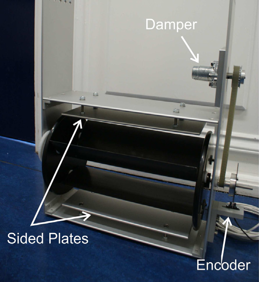

GEOMETRY → FLOW → PRESSURE LOADING / STRICT 2D
Incompressible flow.
Offline loading acoustics.
Follow orbiting, pitching blades from the turbine geometry to recorded liquid–vapour flow, then to a separate acoustic calculation. The CFD models unsteady hydrodynamic loading; acoustic pressure is calculated offline—not a compressible-wave or bubble-collapse simulation. This is a reduced-pressure tunnel demonstration, not an ocean condition or a fifth case in the original acoustic study.
THE DEVICE / THE IDEALISED MODEL
The turbine behind the model.
MRL means Momentum Reversal and Lift. Its three blades orbit a common axis while pitching about their own axes. The rotor axis is perpendicular to the flow: this is a cross-flow turbine, not a propeller.
The photograph shows a laboratory prototype. This study instead uses three elliptical, strictly two-dimensional blade sections, with prescribed orbit and half-speed absolute pitch. It omits the prototype’s shaft, plates, supports and gearing.
- Photographed prototype · blade chord
- 0.095 m
- This model · chord × thickness
- 0.070 × 0.007 m
- This model · blade-centre orbit radius
- 0.055 m
The photograph identifies the turbine concept; it is not the simulated geometry or evidence of this study’s flow or acoustic results.

ORIGINAL FLOW MOVIES, NOT ACOUSTIC WAVES. Strict-2D WALE is not resolved 3D LES. These preserved movies do not predict cavitation noise or individual-bubble collapse. The separate loading lesson below computes one offline acoustic contribution, not total noise. Mesh/time convergence and physical accuracy are unverified.
The pressure/speed movies pair the original cavitating calculation with an older pimpleFoam liquid-only reference using a different solver. That reference is not the new same-solver OFF control. Read these unchanged field movies and flow histories as hydrodynamics, not sound.
No completed native cavitation results are supplied. The 10 s target is not a completion claim. No substitute animation or values are shown.
First select a quantity, then play or seek its recorded movie. Pressure and speed compare the phase-change-suppressed reference with the cavitating calculation; the vapour view shows the cavitating field alone.
Native movies are pending. No replacement animation is shown.
02 / QUANTIFY, WITHOUT INFERRING CAUSE
How much vapour? How low a pressure?
Vapour area is the native vapour-volume integral divided by the numerical depth: m² per unit span, not a count of coloured pixels. Minimum absolute pressure is measured in Pa; saturation pressure is a constant reference, not another measured trace.
No verified histories are available.
These histories alone establish neither a causal lag nor a steady state. Seek the movie to inspect spatial support; do not read a pressure dip as an acoustic pulse.
ORIGINAL FLOW / ASSUMPTIONS & EXACT DATA
A flow comparison, not a validation.
For the original flow movies only: the reference suppresses phase change. Adding an absolute pressure datum to that liquid-only run does not create a new CFD calculation or prove it noncavitating. Solver and numerical differences prevent an isolated, validated cavitation-effect comparison. The new matched loading pair below is a separate calculation, not a relabelling of these movies.
Read source metadata, verification and limitations
Source metadata await a verified completed bundle.
No verified downloads are supplied.
A SEPARATE MATCHED COMPARISON / PRESSURE LOADING ONLY
Change phase. Compare the blade loading.
What changes at a receiver when phase change is enabled? Both new runs use the same interPhaseChangeDyMFoam solver (OpenCFD v2206): incompressible, isothermal two-phase VOF, with strict-2D WALE—not RANS or resolved 3D LES. Mesh, motion, numerics and fully liquid initial conditions are identical; only the phase-change coefficients change: ON (Cc = Cv = 1) versus OFF (Cc = Cv = 0). OFF is a counterfactual control, not proof that liquid remains physically stable at every computed pressure.
Recorded absolute wall pressure feeds a custom 2D pressure-loading model offline: Q = 0; L = (pabs − 3500 Pa)n, with homogeneous-water c₀ = 1480 m/s. Flow pressure is the source input; the plotted receiver pressure is a calculated loading contribution, not a compressible CFD wave field.
Solid-wall pressure loading only · strict 2D / ideal infinite-span. This is one modeled acoustic contribution, not total cavitation noise, finite-turbine sound, perceived loudness or resolved 3D LES. Bubble-collapse and cavity-volume radiation are omitted, as are thickness, advective loading, viscous traction and exterior quadrupoles. No physical-accuracy or causal-source claim follows from the ON/OFF contrast.
Keep the two controls separate. The old flow movies above use a pimpleFoam liquid-only reference. That is not the new same-solver acoustic OFF control. Those movies, their original U/pressure fields and their flow histories are not sound; they are preserved unchanged. Only a separately admitted, completed native pair can populate this lesson.
Start at 0° in the primary 2–10 s source window. Change among twelve receivers at 1 m, compare paired pressure histories, then inspect coherent frequency bins and unconnected directional samples. There is no smoothing, resampling or joining of receiver angles. The useful acoustic band and stationarity remain unverified; these exploratory windows do not establish either.
ON below OFF means this selected pressure-loading contribution is lower, not that a cavitating turbine is quieter; collapse and cavity-volume noise are omitted.
At these frequencies the 1 m receivers are acoustically near-field, not far-field-only radiation measurements.
How the raw clock and analysis windows are used
All 5000 raw source timestamps and untapered forces are retained. The primary and late windows retain the last 4000 and 2000 samples respectively. Analysis cadence, period, Δf and ENBW use the full-record endpoint fit; the actual FFT frequency bins use each selected window’s endpoint fit. These index-clock approximations do not replace or resample the native timestamps. Exact values and timing bounds belong in the downloadable JSON and clock audit; rounded labels are not substituted data. The late window changes the band as well as the duration.
Native loading results are withheld pending verified adapter and completed matched data. No substitute values are shown.